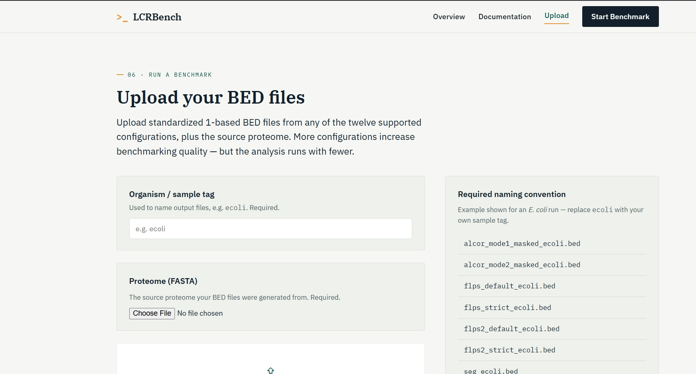

Overview
Low-complexity regions (LCRs) in protein and genome sequences are detected differently by different tools, often with limited agreement between them. This project builds an interactive benchmarking site that runs 8 established LCR detection tools across 13 configurations on the same input data, then compares their outputs directly.
The site generates a report of figures summarizing detection overlap, tool-specific bias, and configuration sensitivity, so a researcher can see at a glance where tools agree and where they diverge.
Approach
- Standardized inputs and parameter sets across all 8 tools and 13 configurations for a fair comparison
- Built workflow scripts to run each tool, parse its output format, and normalize results into a common schema
- Generated comparative figures (overlap, agreement, and sensitivity) as part of an automated report
- Wrapped the pipeline in an interactive website so results can be explored without rerunning the analysis
Results

Comparative analysis of LCR detection performance across different tools and configurations.
Full workflow scripts are maintained on GitHub for reproducibility; each run of the pipeline regenerates the report from source data.